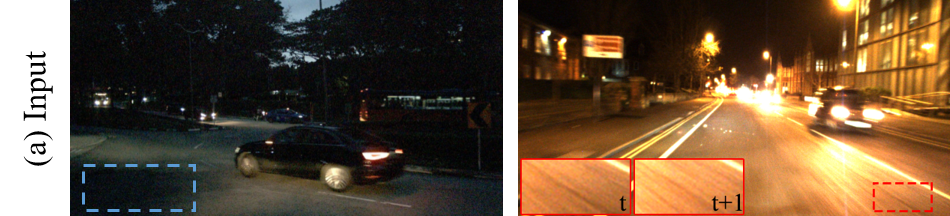
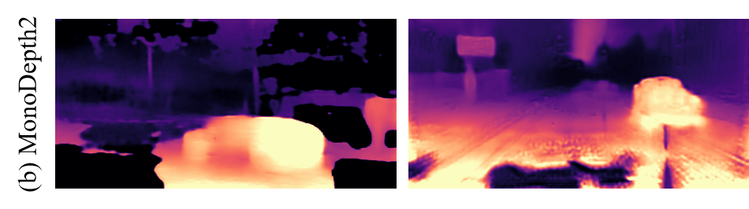
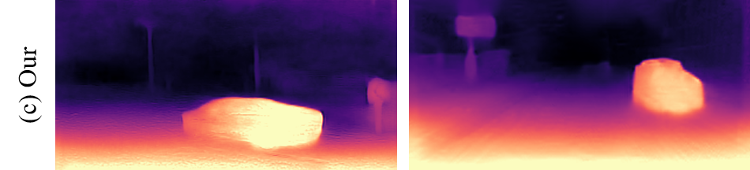

|
Kun Wang (王琨) I am currently a final-year Ph.D. candidate at the PCALab group, Nanjing University of Science and Technology, Nanjing, China. I am privileged to work under the supervision of Prof. Jian Yang and co-supervision of Prof. Jun Li. I warmly welcome opportunities for discussion and collaboration—please feel free to reach out 😄. |

|
ResearchMy research interests encompass computer vision and machine learning, with a focus on 3D-related tasks including depth estimation, depth completion, and reconstruction, etc. |
|    |
Kun Wang*, Zhenyu Zhang*, Zhiqiang Yan, Xiang Li, Baobei Xu, Jun Li ✉, Jian Yang ✉ ICCV, 2021, project page
RNW introduces a novel self-supervised monocular depth estimation framework designed for nighttime scenarios. Low visibility in such conditions results in weak textures, while varying illumination disrupts the brightness-consistency assumption.
To address these challenges, RNM leverages distribution knowledge from unpaired depth maps to prevent incorrect model training, enhances image visibility while keeping brightness consistentency and dynamically adjusts the removal of pixels in textureless regions based on statistical analysis.
|
Academic Service
|
|
The website template is borrowed from Jon Barron. Thanks to him! |